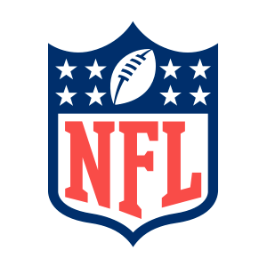

The Athletic
Top headlines

NFLNFL QB Tiers
50 NFL coaches and executives rank the league's quarterbacks from Tier 1 (best) to Tier 5 (backup-level). Two first-time Tier 1 picks this year — including, finally, Lamar Jackson.
Rank
Chg
Quarterback
Tier
My QB Power Rankings
Drag quarterbacks to rank them best to worst. Last week's rank and this season's high/low are shown for reference. Your list saves automatically.
Rank
Quarterback
LW
High
Low
Saved
More from your feed